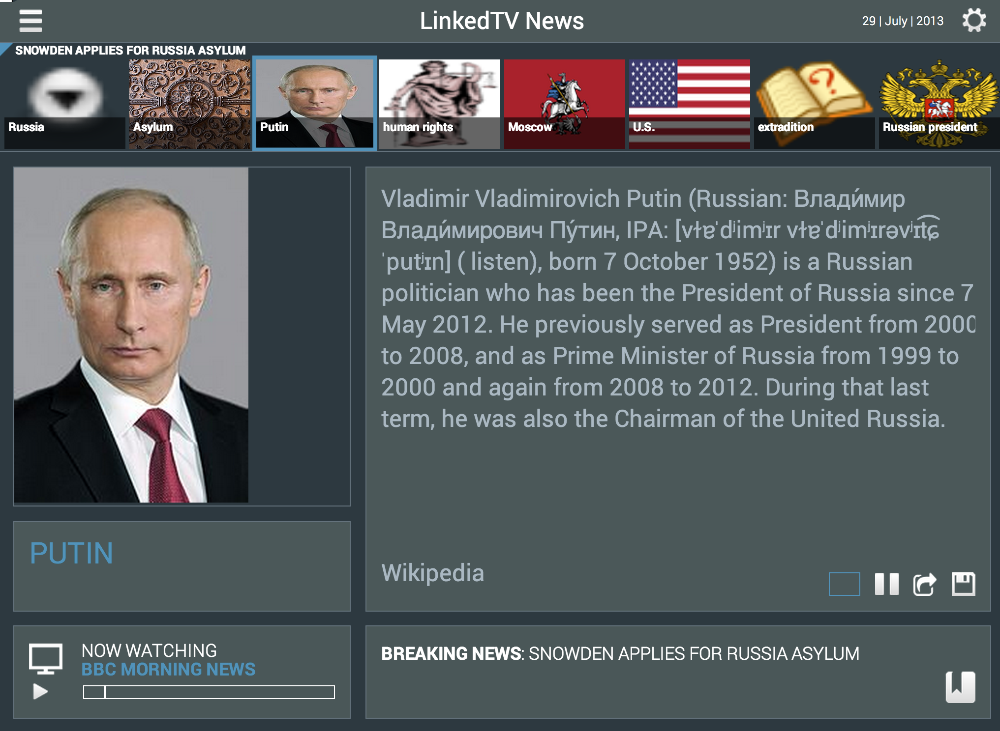

People consume news from multiple sources, such as television, Web, radio and newspaper. For example, we watch the newscast on TV early in the morning to get an overview of the main news, we use the Web to keep track of the News throughout the day, and when we have some spare time we actively browse the Web to explore the news items that we are interested in. At the end of the day, our understanding about the news is a compendium of various information pieces coming from different sources, which complement each other and enrich our news experience. The problem is that in practice it is difficult and time consuming to manually gather all those insights together. For alleviating this issue, we combine the power of non-structured documents with structured data coming from DBpedia to generate a much richer, context aware metadata of a TV News program.
There are already some approaches that address this content augmentation of news broadcasts with Web content. They normally relying on subtitles to extract named entities that can be used to index fragments of a program. However, those approaches are limited to what is being said in a program and written in the subtitles, therefore lacking a broader context. Furthermore, this type of index is restricted to a flat list of entities. In our approach we demonstrate that we can harvest a rich context by expanding an initial set of named entities detected in a TV fragment. By generating complex structured annotations of a news event video, we alleviate the lack of textual resources that limits the application of semantic extraction techniques.
The process can be summarized as follows: we first apply Named Entity Recognition (NER) techniques over the textual information available for a particular newscast by using NERD framework. Afterwards, the flat ranked list of concepts is successfully expanded with more relevant instances not detected by pure named entity recognition approaches by relying on Google searches and entity clustering techniques. Finally we use an optimized pathfinding algorithm implemented in the Everything is Connected Engine (EiCE) for obtaining extra cues about the connectivity of those concepts in DBpedia. In particular, we promoted entities that are better interlinked and have higher frequency in the nodes of the generated DBpedia paths. This leads to a more accurate re-ranking of the entities belonging to this news event.
Our future work includes a better analysis of the DBpedia properties for detecting the most likely used predicates between context entities. By prioritizing paths using those properties and following them, we should be able to find other relevant entities more easily or to justify the ones that have been previously selected. In addition we are currently working in exploiting the resultant extra information about the newscast in a real television scenario, where the data is organized in various dimensions and intends to illustrate all those details you watched but would like to further explore.
The authors would like to thank Michiel Hildebrand and Lilia Pérez Romero from CWI Amsterdam for providing us with ideas and use cases for illustrating the approach described in this paper. This research has been partially funded by Ghent University, the Institute for the Promotion of Innovation by Science and Technology in Flanders (IWT), the Fund for Scientific Research-Flanders (FWO-Flanders), and the European Union's 7th Framework Programme via the project LinkedTV (GA 287911).